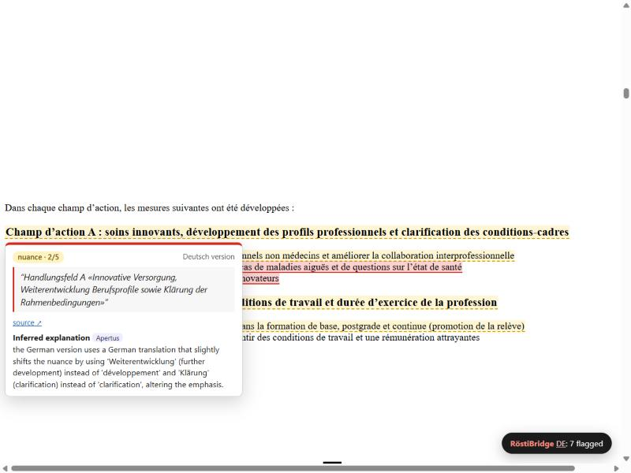
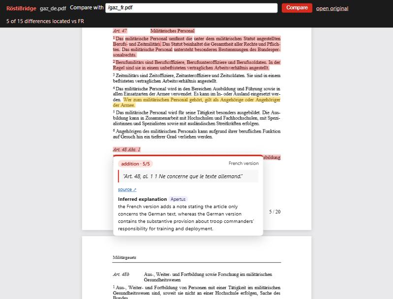

Swiss authorities publish the same page in up to four languages, and the versions do not always say the same thing: sentences are dropped, numbers or deadlines change, or “must” becomes “may”. RöstiBridge, a bridge over the Röstigraben, brings token-level recognition of semantic differences (RSD) to the reader. It is a Firefox extension that highlights passages of an official page (federal, cantonal, RTS news, or a parliamentary PDF) whose meaning may differ from the reference language version. Hovering a highlight shows the other version's excerpt as a citation and an Apertus explanation, in the reader's chosen language.
The same single Apertus prompt is benchmarked on SwissGov-RSD [1]. Apertus-v1.5-70B reports difference spans, which
are projected onto tokens; 3-sample self-consistency averages them. On a 120-document dev subset this gives a macro
token-level Spearman of 0.131, against 0.083 for a model-free number-mismatch baseline and 0.096 for the raw
single-sample spans. Test-split predictions (168 documents) are in predictions/test_70b_n3/.
page / PDF in language X ──► extract blocks ──► find counterpart in language Y
(content script / pdf.js) hreflang · switcher · /de/↔/fr/ URL
· Apertus path matching (admin.ch CMS)
· OpenParlData affair siblings (parlament.ch PDFs)
· Bing-News RSS + Apertus story matching (RTS→SRF)
│ │
└──────► background.js: chunk aligned blocks (≈3.5k chars, proportional
window ±4 blocks) ──► Apertus (shared/prompt.json) ──► JSON
{a, b, type, severity, explanation} ──► filter ──► cache (storage.local)
◄────── highlight `a` excerpts (whitespace-agnostic matching across nodes /
text-layer spans) + hover card (citation `b` + explanation)
shared/sites.js):
browser.storage.local and is only read by the background
script. Page scripts never receive it.src/roestibridge): a stdlib-only Python client (llm.py),
span → token projection (rsd.py), the metric (metrics.py, a faithful re-implementation of
the official evaluate_predictions_admin.py pooling) and a CLI. It reads the same
prompt.json as the extension, and a unit test enforces this.| Federal page: hover card | Parliamentary PDF: hover card |
|---|---|
 |
 |
swiss-ai/Apertus-v1.5-70B (CSCS-hosted, OpenAI-compatible endpoint).
Apertus-v1.5-8B can be selected in the options for on-prem use.response_format: json_object, with
a fallback when the endpoint does not support it). Apertus is used for:
src/extension/shared/prompt.json (rb-prompt-v1). The system prompt
defines what counts as a difference (omission/addition, numbers/dates, obligation/scope, legal terms, actionable
nuance) and what does not (grammar, word order, free translation). It asks for exact, short excerpts.max_tokens
2000, one call per document pair. Token usage (from the API) is about 0.82M prompt and 0.25M completion tokens for
the 3-sample test run (raw_*.jsonl → usage).Example answer (dev document admin_fr_32, EN ↔ FR, severity 4, type
number|scope): the English “Each year about 1,700 A4 pages of text are translated into Romansh.” is matched
with the French “… quelque 1700 pages A4 sont traduites en romanche, deux tiers d'entre elles étant confiées à la
Chancellerie d'État des Grisons”; Apertus explains that the French version adds where two thirds of the work goes.
ZurichNLP/SwissGov-RSD on Hugging Face) is downloaded at run time into
data/swissgov-rsd/ and is not committed.--limit 40, 120 pairs) to stay within the API budget.evaluate --split test exits with an error.
Test predictions were produced once with the prompt and post-processing frozen on dev.L�approvisionnement). The prompt tells the model to copy excerpts verbatim “even if characters look
garbled”, and the projection treats � as a word character.Metric: the official one. For each language pair, all tokens of side A and side B with gold ≠ −1 are pooled
(predictions are padded or truncated to the gold length), global Spearman is computed, and the macro average is taken
over EN–DE/FR/IT. Our implementation matches scipy.stats.spearmanr on the pooled vectors.
| Setup (dev subset, 40 docs/pair) | DE | FR | IT | macro |
|---|---|---|---|---|
| Number-mismatch baseline (no LLM) | 0.102 | 0.068 | 0.080 | 0.083 |
| Apertus-70B, 1 sample, all spans at severity/5 | 0.136 | 0.056 | 0.096 | 0.096 |
| + drop severity 1, omission/addition = 1.0 | 0.157 | 0.069 | 0.100 | 0.109 |
| + number-mismatch prior (max) | 0.159 | 0.074 | 0.104 | 0.112 |
| + 3 samples, averaged (submitted) | 0.191 | 0.077 | 0.125 | 0.131 |
Ablations (no extra API calls; python -m roestibridge.ablate):
| Variant | Macro | Result |
|---|---|---|
| Binary span scores instead of severity | 0.095 | Worse |
| Damping long spans by length | ±0.001 | No gain |
| Paragraph-context smoothing | 0.099 | No gain |
Error analysis (FR, 1 sample):
� corruption.Extension checks. These ran end to end in Firefox 158 (headless, WebDriver BiDi via puppeteer-core) on the packaged extension against live sites on 16 Oct 2026, with Apertus-70B throughout. Counts vary between runs because the model is not deterministic.
| Case | Result |
|---|---|
| bfe.admin.ch/fr → DE | 3–4 highlighted, e.g. a paragraph on the IAEA General Conference that is missing in the German version |
| be.ch/fr → DE (bilingual canton) | 1 highlighted, a tone shift (“beau palmarès” vs “brillieren”) |
| bag.admin.ch FR → DE | Counterpart found via Apertus slug matching (agenda-soins-de-base → agenda-grundversorgung); up to 9 differences, mostly list items |
| ch.ch/it → DE and FR (federal: both) | Both versions compared; the homepages agree (0 differences) |
| RTS Amaudruz article → SRF | SRF story found and linked (“SVP-Nationalrätin Céline Amaudruz will Bundesrätin werden”); 8–9 differences highlighted |
| parlament.ch PDF link (DE) | Opened in the RöstiBridge viewer; FR counterpart found via OpenParlData affair 234959 (Kinderabzug = 12'000 Franken → déduction pour enfants = 12 000 francs); the tables agree (0 differences) |
| Fedlex consultation PDF (DE↔FR) | 16 differences, including articles where the French reads “Ne concerne que le texte allemand” while the German changes the provision; 10 of 16 placed on the text layer |
it, so Apertus
picks the sibling by title rather than by the language field.webRequest (PDF interception).make run (Docker, no GPU) runs four steps:
LLM_API_KEY set it also runs a live Apertus prediction and evaluation on LIVE_LIMIT
dev documents per language.make predict-test regenerates the test predictions (168 × 3 calls).declarativeNetRequest for PDFs, plus a “report this discrepancy to the
authority” button that drafts a correction request with the citation.Creative Commons Attribution 4.0 (CC-BY-4.0). pdf.js (Apache-2.0) is bundled in src/extension/pdf/lib/ with its licence.
[1] Wastl et al. SwissGov-RSD: A Human-annotated, Cross-lingual Benchmark for Token-level Recognition of Semantic Differences Between Related Documents. arXiv:2512.07538 / ACL 2026. https://arxiv.org/abs/2512.07538